Qwen3.6 · llama.cpp · CUDA · Windows
旧版有坑！Qwen3.6 35B越狱版本地部署【重制教程】｜12GB显存实测
本期重新演示在 Windows 上使用 llama.cpp 部署 Qwen3.6-35B-A3B Uncensored 模型。测试电脑使用 RTX 3060 12GB， 选择 IQ2_M 量化版本，并补齐上期教程遗漏的 CUDA DLL 和参数配置。
在 YouTube 观看本期视频开始前要准备什么
- Windows 10 或 Windows 11 电脑，并能正常解压 ZIP 文件。
- NVIDIA 显卡和可用的 NVIDIA 驱动。视频测试环境是 RTX 3060 12GB。
- 至少约 13GB 的可用磁盘空间，用于 IQ2_M 主模型、视觉模型和 llama.cpp。
- 下载大文件时保持网络稳定。Hugging Face 模型文件超过 10GB。
- 部署前关闭占用大量显存的软件，尤其是其他 AI 程序、NVIDIA Broadcast、录屏和重度浏览器页面。
为什么要重做上一期教程
上一期已经能够把模型启动起来，但“能运行”不代表配置正确。 当 CUDA 运行库缺失时，脚本即使写了 GPU 层参数，llama.cpp 仍可能只使用 CPU； 默认创建多个服务 slot、上下文过大或显存贴边，也会让 CUDA 推理变得很慢。
本次重新测试后，12GB 显存环境采用 IQ2_M 主模型、F16 视觉投影模型、Q8 KV、 8192 上下文和单 slot。后文会给出完整脚本，也会链接到独立性能数据页面。
打开 llama.cpp 官方仓库
-
进入官方 GitHub 项目
浏览器打开 ggml-org/llama.cpp 。不要从不明网盘下载经过修改的可执行文件。
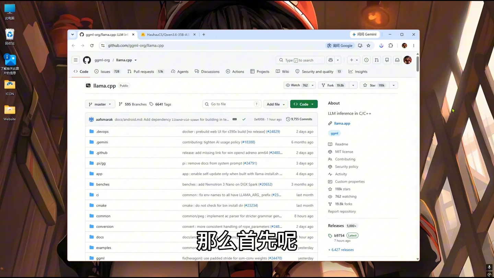
在仓库右侧找到 Releases 入口。 -
点击 Releases
点击仓库右侧的 Releases。 视频录制时最新版本为
b9754。版本号会持续变化， 读者应优先选择页面当前标记为 Latest 的稳定发布版。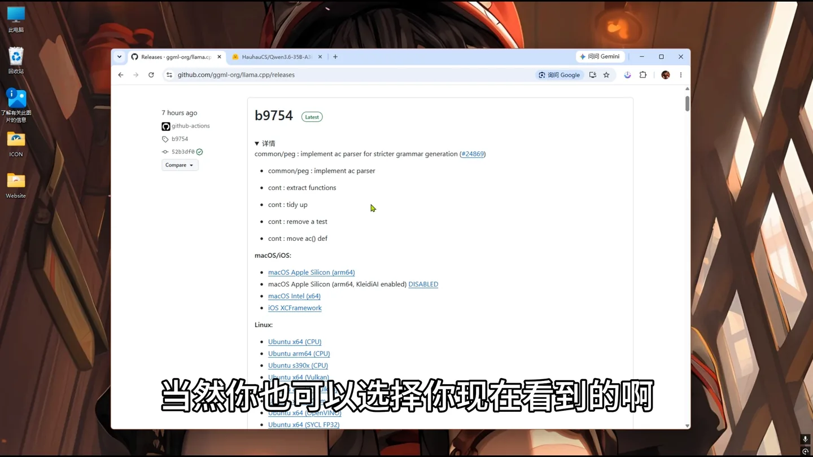
文章记录的是视频操作，下载时以当前 Releases 页面为准。
下载 Windows CUDA 主程序和运行库
-
向下找到 Windows x64 下载项
展开当前版本的 Assets，向下找到 Windows 区域。 NVIDIA 显卡选择名称中带有
win-cuda的 x64 压缩包。 视频选择 CUDA 13 版本，文件名通常类似：llama-b9754-bin-win-cuda-13.3-x64.zip版本号可能已经更新，文件名前半部分会不同。AMD、Intel 或纯 CPU 用户不能照搬这个下载项。
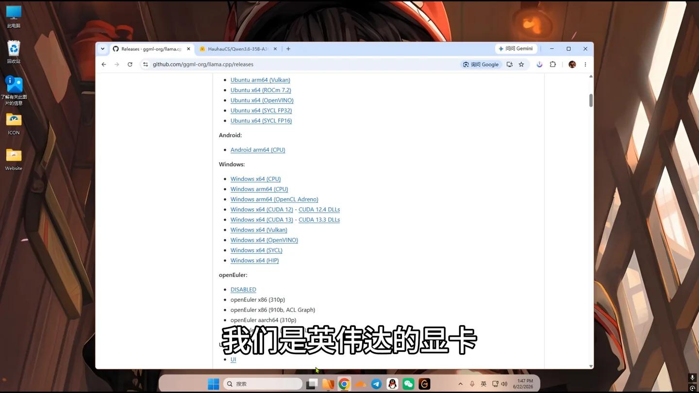
视频电脑使用 NVIDIA 显卡，因此选择 Windows x64 CUDA 13。 -
同时下载匹配的 CUDA DLL
只下载 llama.cpp 主压缩包还不够。继续找到同一版本下的 CUDA 13.3 DLLs，文件名通常类似：
cudart-llama-bin-win-cuda-13.3-x64.zip两个压缩包的 CUDA 大版本必须匹配。主程序使用 CUDA 13 时，不要混用 CUDA 12 的 DLL。
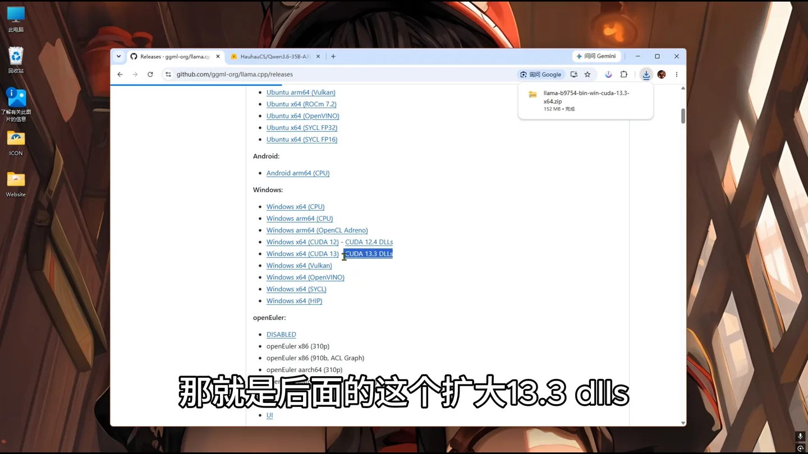
CUDA DLL 缺失是旧配置实际退回 CPU 的主要原因。
打开 Qwen3.6 35B Uncensored 模型页面
-
进入 Hugging Face 模型仓库
打开 HauhauCS/Qwen3.6-35B-A3B-Uncensored-HauhauCS-Aggressive 。 视频画面中该模型已有数百万次下载。
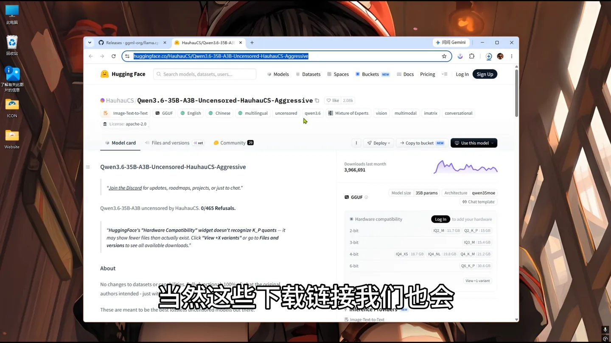
文件列表中包含多种量化主模型和一个视觉投影模型。 -
进入文件列表
点击 Files and versions。 GGUF 文件较大，点击下载后等待浏览器完成，不要只留下未完成的临时文件。
12GB 显存选择 IQ2_M 和 F16 mmproj
-
下载 IQ2_M 主模型
视频电脑是 RTX 3060 12GB，因此选择约 10.86 GiB 的 IQ2_M：
Qwen3.6-35B-A3B-Uncensored-HauhauCS-Aggressive-IQ2_M.gguf点击文件右侧下载按钮。IQ2_M 用较低量化精度换取更小体积， 让主模型、视觉模型、KV Cache 和 CUDA 缓冲尽量放进 12GB 显存。
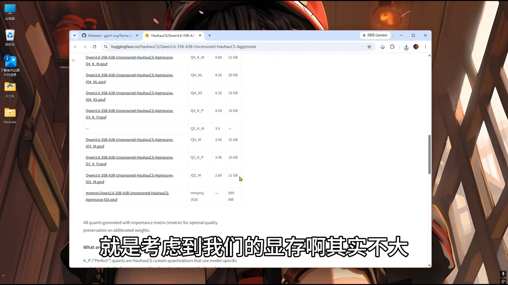
不要因为名称相似而下载 IQ3_M；它约 14.38 GiB，不适合本文的 12GB 全 GPU 配置。 -
下载视觉投影模型
为了让 WebUI 能识别图片，还要下载约 0.84 GiB 的 F16 mmproj：
mmproj-Qwen3.6-35B-A3B-Uncensored-HauhauCS-Aggressive-f16.gguf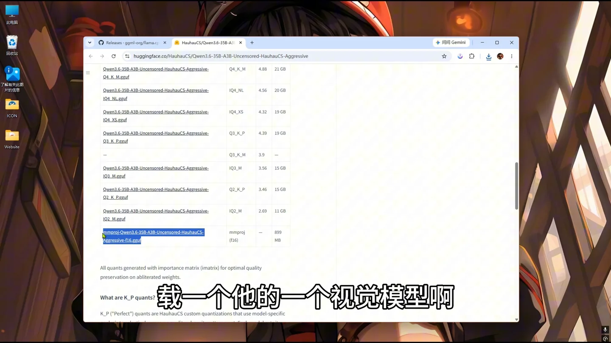
没有 mmproj 时，语言模型仍能对话，但不能完成本文的图片理解测试。
解压 llama.cpp 并整理模型文件
-
解压 llama.cpp 主压缩包
在下载目录找到
llama-...-bin-win-cuda-13.3-x64.zip， 右键选择 全部解压，或使用自己熟悉的解压软件。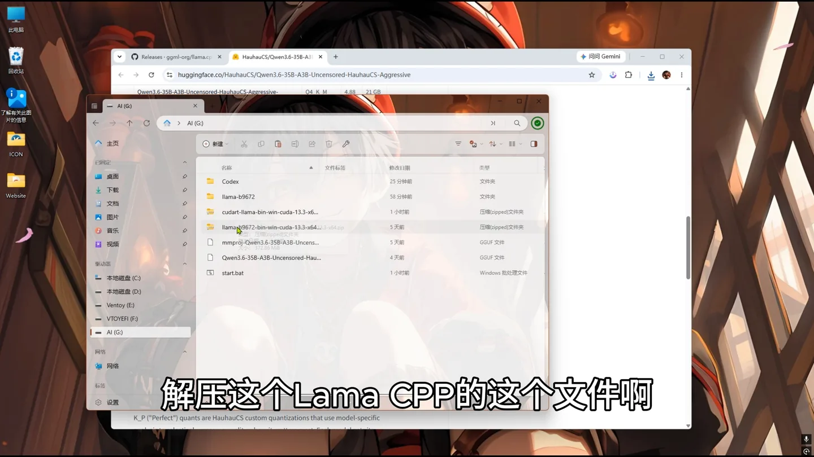
后续所有文件都放进解压后的 llama.cpp 根目录。 -
在根目录新建 models 文件夹
双击进入解压后的目录。在空白位置右键新建文件夹，名称填写：
models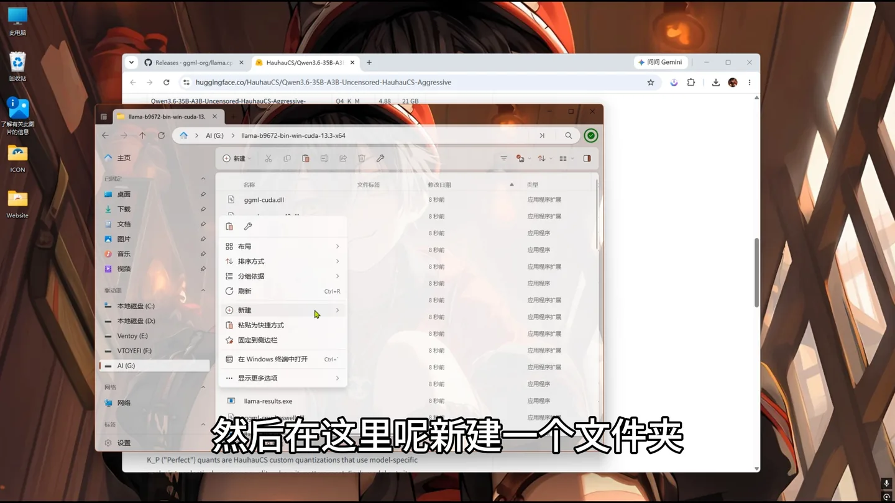
文件夹名称要与启动脚本中的 models\...路径一致。 -
把两个 GGUF 文件移入 models
把刚下载的 IQ2_M 主模型和 F16 mmproj 一起移动到
models文件夹。整理完成后的关键目录结构如下：llama-b9754-bin-win-cuda-13.3-x64/ ├── llama-server.exe ├── start.bat ├── models/ │ ├── Qwen3.6-35B-A3B-Uncensored-HauhauCS-Aggressive-IQ2_M.gguf │ └── mmproj-Qwen3.6-35B-A3B-Uncensored-HauhauCS-Aggressive-f16.gguf └── 其他 llama.cpp 文件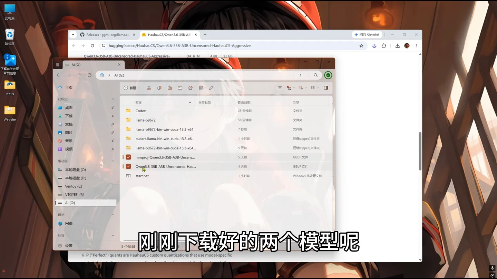
两个文件名很长，移动后不要改名，除非同步修改启动脚本。
把 CUDA 13.3 DLL 复制到程序根目录
-
解压 CUDA DLL 压缩包
找到另一个下载的
cudart-llama-bin-win-cuda-13.3-x64.zip并解压。这个包体积明显大于普通的几个配置文件，因为包含 cuBLAS 运行库。 -
选中三个 DLL
进入解压后的目录，应看到以下文件：
cublas64_13.dll cublasLt64_13.dll cudart64_13.dll选中三个文件后按 Ctrl + C。
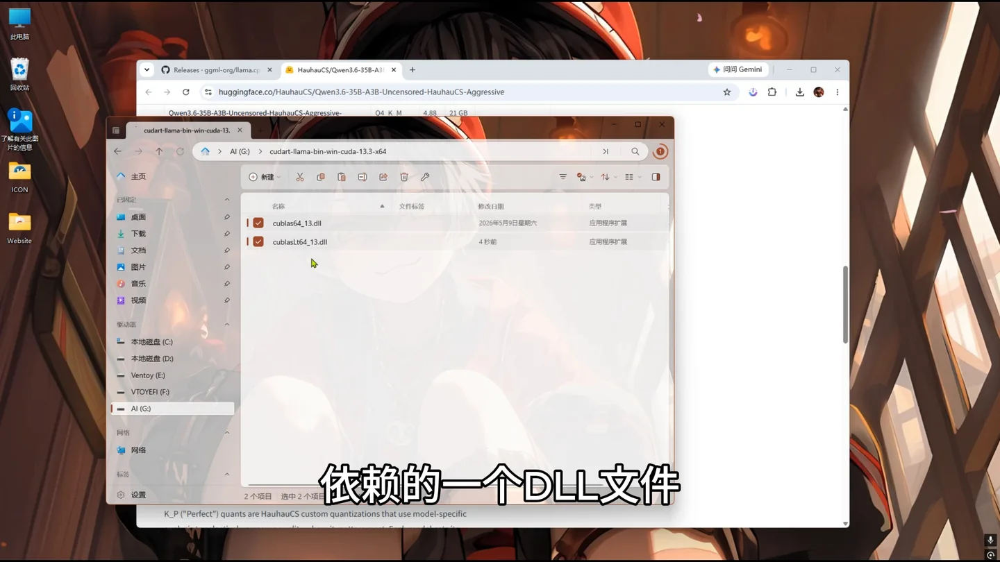
三个文件缺一不可，尤其是 cublas64_13.dll。 -
粘贴到 llama-server.exe 同级目录
回到 llama.cpp 根目录，也就是能看到
llama-server.exe的位置，按 Ctrl + V 粘贴。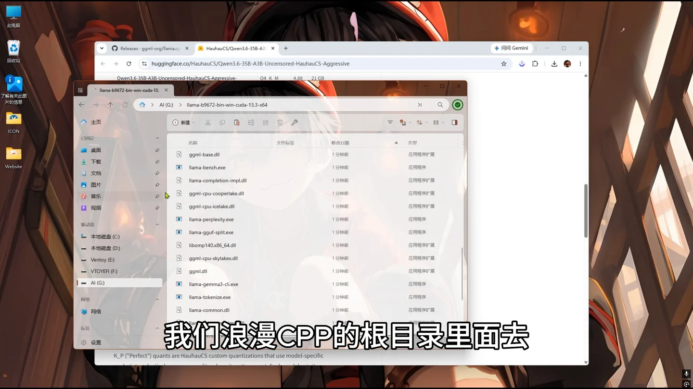
DLL 不能放进 models 文件夹，必须与 llama-server.exe 位于同一层。 -
可选：先检查 CUDA 是否被识别
在根目录打开 PowerShell，运行：
.\llama-server.exe --list-devices正常时应看到类似：
CUDA0: NVIDIA GeForce RTX 3060如果只出现
Available devices:而没有 CUDA0， 先不要继续跑模型。检查主程序与 DLL 的 CUDA 版本是否匹配，并更新 NVIDIA 驱动。
创建经过调优的 start.bat
视频把准备好的启动脚本拖入 llama.cpp 根目录。
你也可以右键新建文本文件，将文件名改为 start.bat，
再右键选择 编辑，写入以下完整内容。
@echo off
chcp 65001 >nul
cd /d "%~dp0"
llama-server.exe ^
-m "models\Qwen3.6-35B-A3B-Uncensored-HauhauCS-Aggressive-IQ2_M.gguf" ^
--mmproj "models\mmproj-Qwen3.6-35B-A3B-Uncensored-HauhauCS-Aggressive-f16.gguf" ^
--mmproj-offload ^
--image-min-tokens 1024 ^
--image-max-tokens 1024 ^
-ngl all ^
--fit off ^
--flash-attn on ^
--cache-type-k q8_0 ^
--cache-type-v q8_0 ^
-c 8192 ^
-n 4096 ^
-np 1 ^
--host 127.0.0.1 ^
--port 8080
pause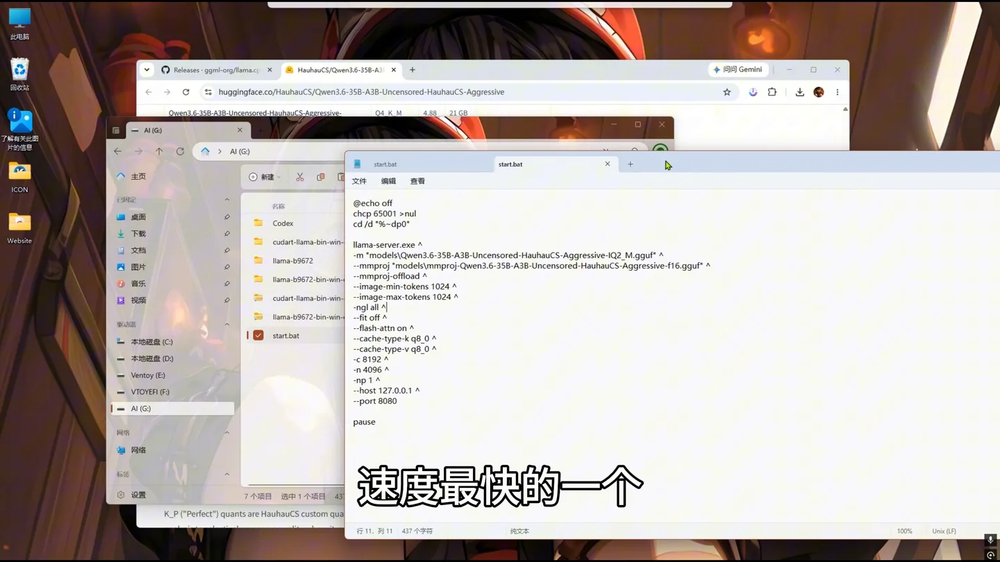
主要参数为什么这样设置
--mmproj-offload：把视觉投影计算卸载到 GPU。--image-min-tokens 1024与--image-max-tokens 1024：减少普通图片首轮处理时间。-ngl all --fit off：尽可能把主模型层放到 GPU，并关闭自动显存适配。--cache-type-k q8_0与--cache-type-v q8_0：本机实测比 Q4 KV 更快。-c 8192：在 12GB 显存环境保留实用上下文长度。-np 1：只创建一个服务 slot，避免默认多个 slot 增加 KV 与显存压力。--host 127.0.0.1：只允许当前电脑访问，不直接暴露到局域网。
查看完整参数测试数据
我使用 RTX 3060 12GB 对 CPU、自动适配、强制全层、上下文长度、 显存占用和视觉 Token 做了多轮对比。独立页面包含柱状图、前后对比和可排序明细表。
打开 Qwen3.6 CUDA 性能数据双击 start.bat 首次加载模型
-
运行启动脚本
在 llama.cpp 根目录双击
start.bat。 Windows 如果弹出安全提示，先确认文件确实来自你刚下载的官方包和自己创建的脚本。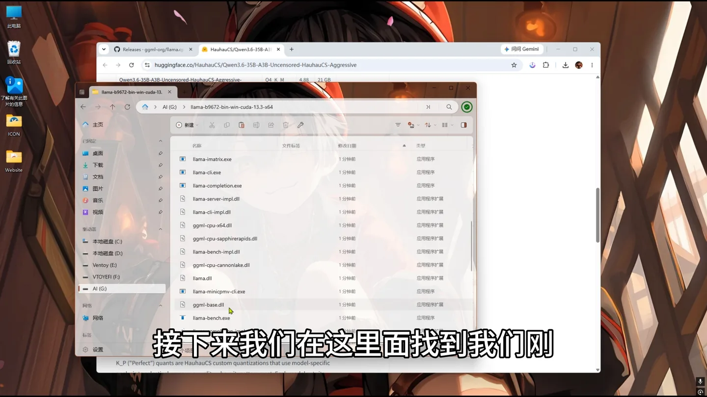
不要在程序运行期间移动模型或关闭命令窗口。 -
等待模型载入
首次加载十几 GB 的模型需要时间。命令窗口会依次显示 CUDA 设备、模型元数据、 GPU 层和服务监听地址。磁盘较慢时等待会更久。
-
确认出现本地地址
加载完成后，日志会显示 WebUI 监听地址，通常是：
http://127.0.0.1:8080复制这个地址。只要命令窗口保持运行，本机浏览器就可以访问。
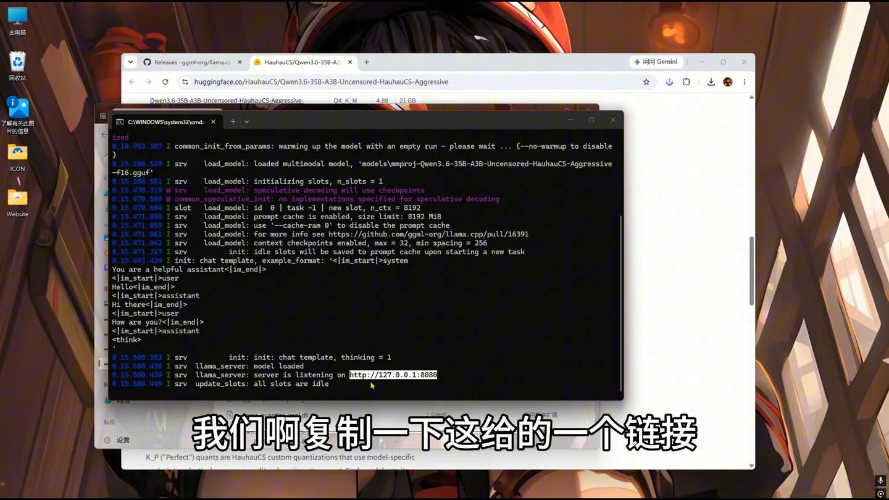
日志中还应看到 CUDA 设备和模型加载成功的信息。
在浏览器打开 llama.cpp WebUI
-
粘贴本地地址
在浏览器地址栏粘贴
http://127.0.0.1:8080并回车。 页面应显示 llama.cpp 自带的聊天界面。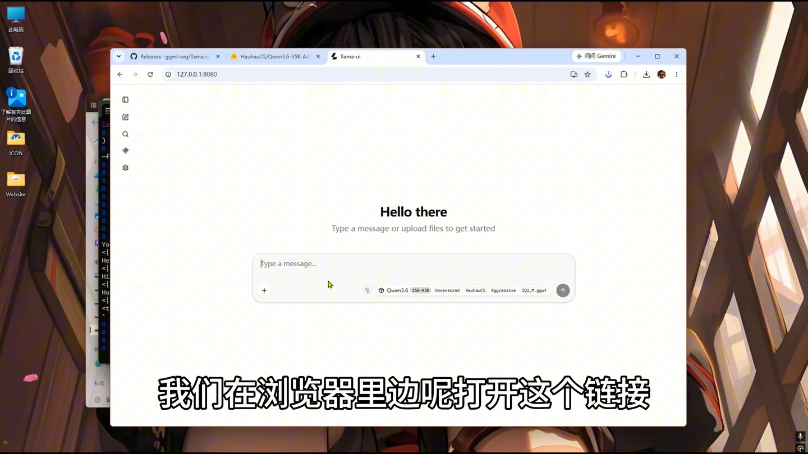
如果浏览器打不开，检查命令窗口是否仍在运行，以及端口是否被其他程序占用。
测试文字对话和图片识别
-
先发送一句简单文字
在输入框中发送“你好”等短消息，确认模型能正常返回内容。 视频录屏现场显示生成速度约为
16.87 t/s。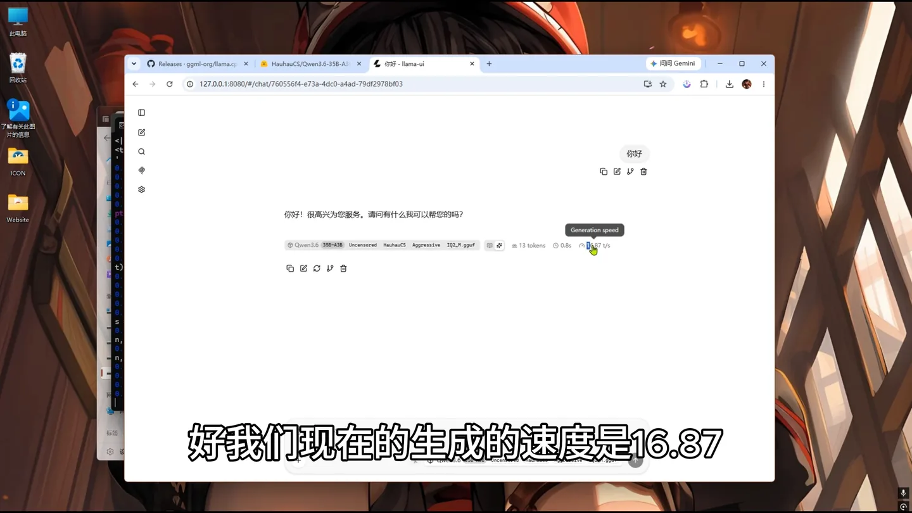
录屏、浏览器和后台程序都会占用 GPU；这个现场数值不等于独立基准测试。 -
上传一张图片
点击输入框附近的附件按钮，选择一张图片，然后输入“这张图片讲了什么”等问题并发送。
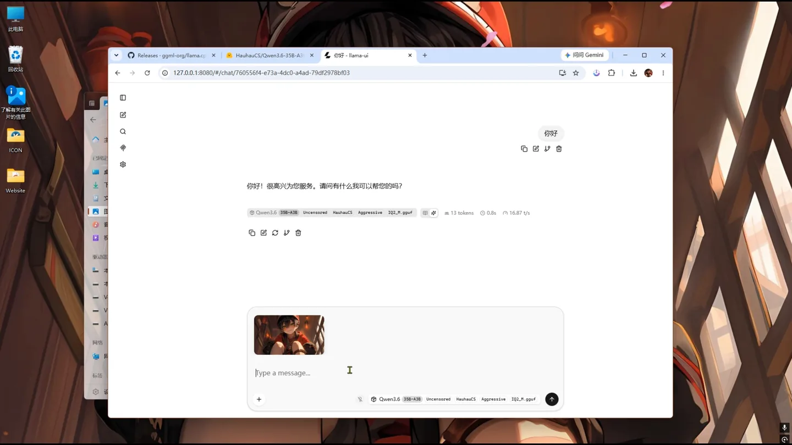
图片缩略图出现在消息中，说明文件已经附加到请求。 -
检查图片描述是否合理
模型应根据图片生成文字描述。视频中成功识别并列出画面内容， 证明 F16 mmproj 已加载，视觉请求可以正常工作。
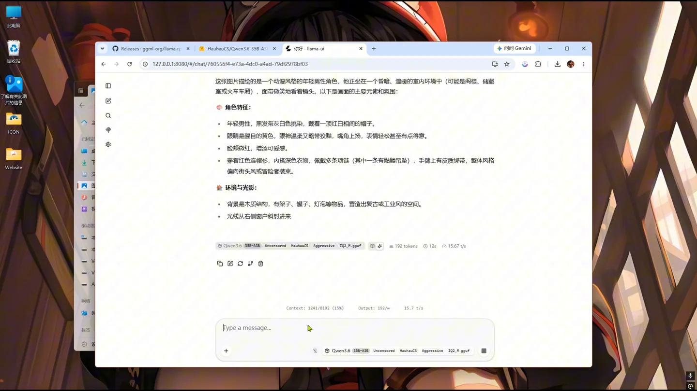
视觉模型能运行不代表每次识别都准确，重要信息仍需人工核对。 -
查看视觉回答速度
视频现场的图片回答显示约
15.57 t/s。 独立调优报告使用固定请求和预热流程测试时，图片后的文本生成约为65.42 t/s；两者的录屏状态、后台显存占用和测试条件不同，不能直接视为同一基准。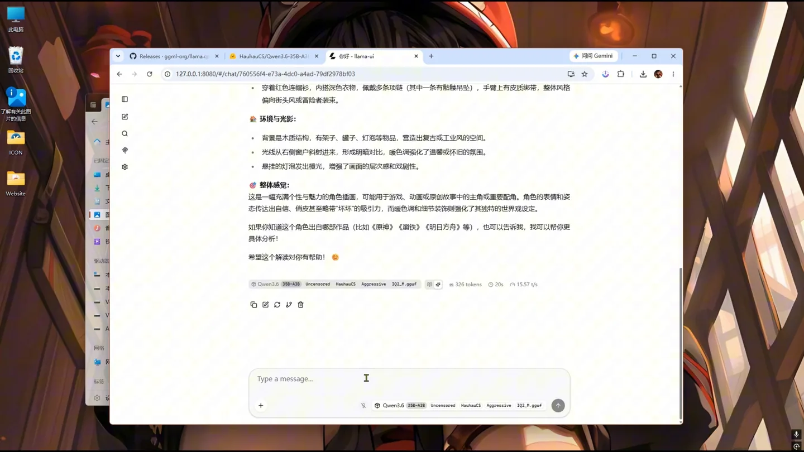
判断参数优劣时，请优先使用相同提示、相同输出长度和相同后台环境进行多轮测试。
常见问题和故障排查
生成速度仍然只有约 10–15 t/s
- 运行
.\llama-server.exe --list-devices，确认存在 CUDA0。 - 检查三个 CUDA 13 DLL 是否与
llama-server.exe位于同一目录。 - 确认 DLL 与下载的 llama.cpp CUDA 大版本一致。
- 查看任务管理器或
nvidia-smi，关闭其他占用显存的程序。 - 检查脚本是否保留
-np 1，避免默认多个 slot 挤占显存。 - 首次请求可能包含 CUDA 预热，连续测试两三次后再记录稳定速度。
启动时显存不足或程序退出
- 先关闭所有其他 GPU 应用并重新启动脚本。
- 把
-ngl all --fit off改为-ngl auto -fitt 256。 - 仍然失败时降低上下文，例如把
-c 8192改为-c 4096。 - 确认下载的是 IQ2_M，而不是体积更大的 IQ3_M。
模型能聊天，但不能识别图片
- 确认 F16 mmproj 文件位于
models文件夹。 - 确认
--mmproj后的文件名和本机文件完全一致。 - 启动日志中不应出现 mmproj 文件无法打开的错误。
- 换一张普通 JPG 或 PNG 测试，排除图片格式问题。
图片识别首轮等待很久
- 确认脚本包含
--image-min-tokens 1024和--image-max-tokens 1024。 - 1024 偏向速度，适合普通场景描述；小字 OCR、密集表格和精细定位可能需要更高值。
- 报告中的 1920 × 1200 测试图从约 36.4 秒降到 11.65 秒，但不同图片会有差异。
双击 start.bat 一闪而过
- 确认脚本末尾保留
pause，这样错误不会立即关闭。 - 打开文件扩展名显示，检查是否误保存为
start.bat.txt。 - 检查命令中的引号、续行符
^和模型文件名。
完成后的正确状态
--list-devices可以看到 NVIDIA CUDA0。- 主模型与 mmproj 都位于根目录下的
models文件夹。 - 三个 CUDA 13.3 DLL 与
llama-server.exe同级。 - 启动脚本使用单 slot、Q8 KV、8192 上下文和 1024 视觉 Token。
- 浏览器可以打开
http://127.0.0.1:8080。 - 文字对话和图片识别都能完成。
官方资料与相关链接
“Uncensored”是第三方模型作者使用的名称，不代表输出一定正确、安全或合法。 本地运行模型时仍应保护隐私，核对结果，并遵守所在地法律法规、模型许可证和服务条款。